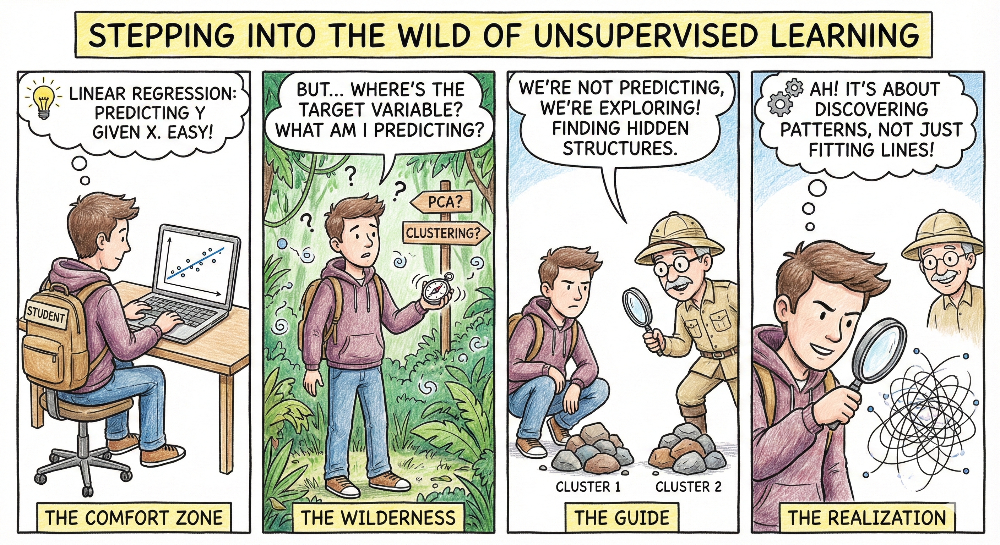
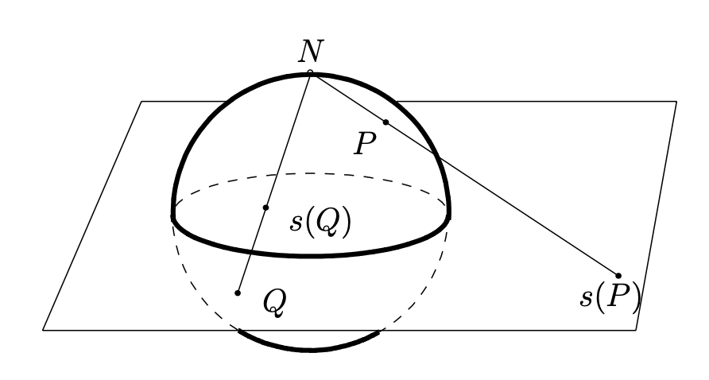
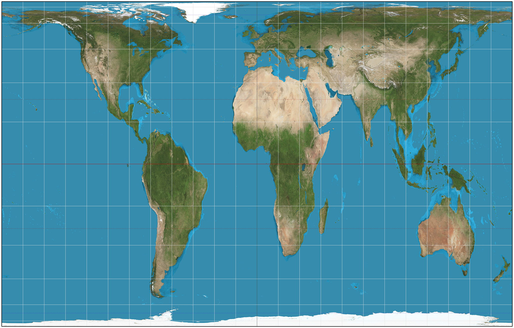
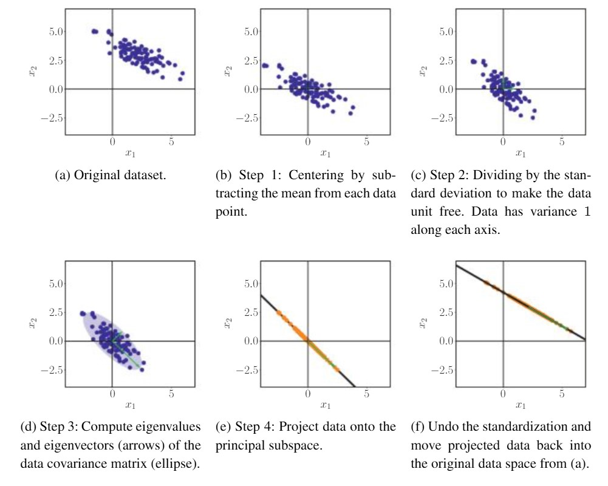
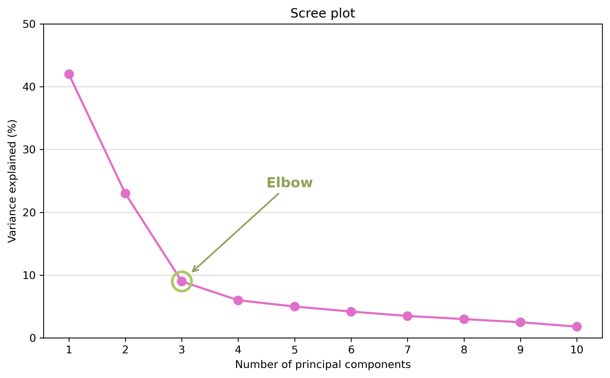
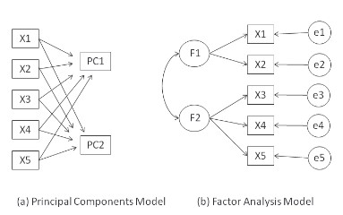
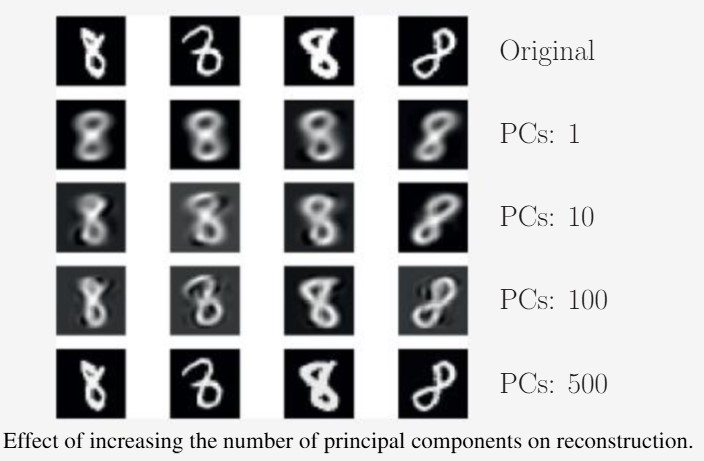
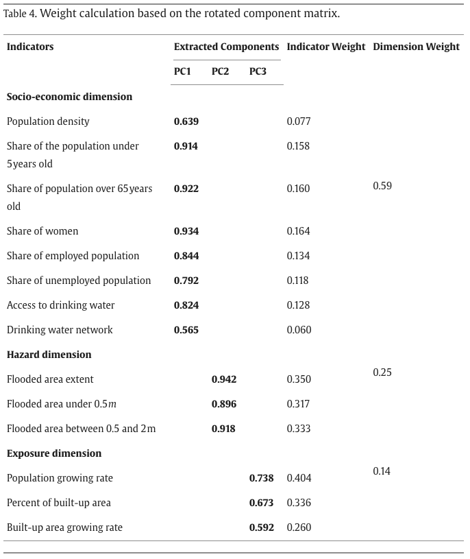
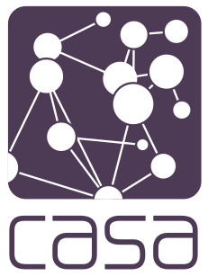

Dimensionality Reduction
Bea Taylor - bea.taylor@ucl.ac.uk
8th December 2026
CASA0007 Quantitative Methods
Last week
Lecture 8 was on multilevel regression
Looked at:
- Understand Ordinary Least Squares (OLS) and Linear Mixed Effects (LME) models
- Understand the difference between Fixed Effects and Random Effects
- Can use Python or R to run OLS and LME
This week

Image credit: Google GeminiLearning Objectives
By the end of this lecture you should be able to:
- Explain the motivation of dimensionality reduction
- Describe the principle of Principal Component Analysis
- Apply PCA to school datasets or other datasets
Supervised vs unsupervised learning
Two main categories of machine learning.
Supervised learning
Machine learning techniques that use labelled datasets to train models to identify underlying patterns.
- There is a target variable (or label) to predict
- The training dataset has known target variable values
- Use the training dataset to build a model to predict the target variable for new data points
Unsupervised learning
Machine learning techniques that identify patterns in unlabeled datasets.
- Theres is no target variable (label) to predict
- Want to discover hidden patterns or data groupings, without the need for human input
Principal component analysis (PCA) and Clustering are both types of unsupervised learning.
High-dimensional data
Dimensionality
Dimensionality refers to the number of features or variables in a dataset.
- A tabular data of M rows, N numerical columns has a dimensionality of N (not M)
- Note: A column representing seasons in a year has a dimensionality of 4, or 3 (if using one-hot encoding and K-1 dummy variables), rather than 1
Quiz

Image credit: www.photofacts.nlCanon EOR R8 has a maximum resolution of 6000 * 4000 pixels for JPEG/HEIF, where every pixel corresponds to three colour channels (RGB).
What is the dimensionality of an image from EOR R8?
- A. 6000 * 4000
- B. 6000 * 4000 * 3
- C. 1
- D. 6000 * 4000 * 3 * 2
Quiz
You are given the following dataset with 1000 rows and 3 columns.
| x1 | x2 | month | |
|---|---|---|---|
| 0 | 1.2 | 4.5 | Jan |
| 1 | 3.4 | 2.2 | Feb |
| 2 | -0.5 | 3.3 | Mar |
| 3 | 2.1 | -1.1 | Apr |
| 4 | 0.0 | 0.7 | May |
| … | … | … | … |
What is the dimensionality of the feature space for this dataset after one-hot encoding of the month column (with one category dropped)?
- A. 2
- B. 11
- C. 13
- D. 14
High-dimensional data
The curse of dimensionality!
When data has a large number of dimensions:
- Analysis is hard, e.g. multicollinearity & variable selection in linear models
- Interpretation is challenging
- Visualisation is impossible
- Storage is expensive
Exploitable properties
- Many dimensions are redundant and can be explained by a combination of other dimensions
- Many dimensions are correlated
- The data often lies in an underlying lower-dimensional space
Dimensionality reduction
- We can reduce the dimensionality of data by generating a new set of (fewer) dimensions
- Doesn’t change the number of data points
- Often there is a cost of information loss
- It is unsupervised learning, and there is no ground truth to validate the result
- Can be viewed as data compression
Dimensionality reduction as compression
- Music: WAV → MP3
- typical size reduction ≈ 10:1
- e.g. ∼50 MB → 5 MB for an album
- Image: TIFF → JPEG
- typical size reduction ≈ 5:1 to 10:1
- Map projection: Earth (3D ellipsoid) → 2D map
- dimension reduction 3:2, with distortion of area/shape/distance
Map projection

Mathematical projection of a sphere onto a plane. The stereographic projection is conformal, meaning that it preserves angles. However, it does not preserve area or distance.
Source: LibreTexts Mathematics.
The Gall-Peters projection is an equal-area cylindrical map projection. It preserves area but distorts shapes, especially near the poles.
Source: Wikipedia.Principal component analysis (PCA)
PCA
- A method for linear dimensionality reduction
- Each new dimension is a linear combination of original ones
- Proposed by Pearson (1901)* and Hotelling (1933)
- Still one of the most popular techniques for data compression and visualisation
*Pearson, Karl. “LIII. On lines and planes of closest fit to systems of points in space.” The London, Edinburgh, and Dublin philosophical magazine and journal of science 2.11 (1901): 559-572
Illustration
- simplified example of PCA from 2D to 1D
- Aim to find a ‘direction’ (i.e. a line) that keeps the most information (or variance) between data points in 2D

Which direction is the best?

| Direction | Variance (explained) | Proportion of total |
|---|---|---|
| Original data (total) | 43.8053 | 1 |
| Projection on \(x_1\) axis | 8.79708 | 0.200822 |
| Projection on \(x_2\) axis | 35.0083 | 0.799178 |
| Projection on \(y=2x+0.1\) | 43.8013 | 0.999908 |
| Projection on \(y=x\) | 39.4468 | 0.900502 |
PCA automatically searching for informative directions
- PCA automatically searches the most informative direction, called the first principal component (PC)
- After finding this one, PCA looks for a second PC:
- Not overlapping the information already captured by the first PC
- With as much spread as possible between data points
- Not needed when 1st PC explains 100% variance

Generalisation to M-dimensional dataset
- The example above is for illustration; please don’t apply PCA to a 2-D dataset in your work
- For data with M dimensions (not M columns), PCA method will find M (or fewer than M) PCs as a new space to represent the data points
- These PCs are ranked by variance explained, i.e. #1 PC with maximal variance, followed by #2, #3
- These PCs are uncorrelated with each other
- We will choose the first k PCs for analysis, usually \(k\)=2,3
Different ways to understand PCA
- Maximum variance perspective (we did it!)
- Projection perspective
- Maths perspective - Eigenvector Computation and Low-Rank Approximations*
- See Chapter 10, Mathematics for Machine Learning
Maths perspective
- Mathematically PCA is built on Linear Algebra principles (week 4).
- The goal is to describe the data using independent vectors.
- This is acheived through cosntructing the covariance matrix, which captures the relationships between the different dimensions of the data.
- Read more in this Medium article: The Math of Principal Component Analysis (PCA)
PCA in practice
Illustrating steps of PCA

Image credit: Mathematics for Machine LearningHow to choose k?
No hard and fast rule to choose the number of principal components, but there are some general guidelines.
- For visualisation: k = 2 or 3
- Keep components with eigenvalues > 1. Eigenvalue of a PC is proportional to variance explained by this PC
- Scree plot (elbow method): use the point where the bend happens, where the curve changes from steep to flat
Scree plots

Example: PCA on performance & disadvantage attributes of school data
| Attribute | Description |
|---|---|
| PTFSM6CLA1A | Percentage of pupils eligible for Free School Meals in the past six years (FSM6) and/or Children Looked After (CLA1A). |
| PTNOTFSM6CLA1A | Percentage of pupils not eligible for FSM6 and not CLA1A. |
| PNUMEAL | Percentage of pupils whose first language is known or believed to be other than English. |
| PNUMFSMEVER | Percentage of pupils who have ever been eligible for Free School Meals in the past six years (FSM6 measure). |
| ATT8SCR_FSM6CLA1A | Average Attainment 8 score for pupils eligible for FSM6 and/or CLA1A. |
| ATT8SCR_NFSM6CLA1A | Average Attainment 8 score for pupils not eligible for FSM6 and not CLA1A. |
| ATT8SCR_BOYS | Average Attainment 8 score for male pupils. |
| ATT8SCR_GIRLS | Average Attainment 8 score for female pupils. |
| P8MEA_FSM6CLA1A | Progress 8 measure for disadvantaged pupils (FSM6 and/or CLA1A). |
| P8MEA_NFSM6CLA1A | Progress 8 measure for non-disadvantaged pupils. |
Scree plot
| n_pc | explained_var | cum_var |
|---|---|---|
| 1 | 0.61 | 0.61 |
| 2 | 0.255 | 0.865 |
| 3 | 0.053 | 0.918 |
| 4 | 0.038 | 0.955 |
| 5 | 0.028 | 0.983 |
| 6 | 0.007 | 0.99 |
| 7 | 0.005 | 0.994 |
| 8 | 0.005 | 0.999 |
| 9 | 0.001 | 1 |
| 10 | 0 | 1 |

How many data points are sufficient for PCA
- Rule 1 “5-10 times as many subjects as variables”
- e.g. with 10 variables, we need at least 50 or 100 data points
- Rule 2: with several hundred observations, PCA are probably reliable.
- Reference: R in Action, by Robert I Kabacoff
- Discussion on StackExchange
PCA is not factor analysis
- PCA aims to find PCs that are combination of original variables for maximising the variance explained.
- Factor analysis (FA) aims to find hidden factors that underlie or cause the observed variables.

Source: R in ActionBalancing components with information loss
Example of PCA on the MNIST dataset.
- 60,000 examples of handwritten digits 0~9.
- Each digit is an 28*28 image or 784 pixels (dimensions)

Source: Chapter 10, Mathematics for Machine LearningExample of PCA on a research question
- Research question: Create an index of social vulnerability to floods in the Somes-Tisa river basin in Romania.
- Data: 76 regions, each with data on 14 indicators
- indicators such as population density, population growth rate, percent of built up area, access to drinking water
- note: 14 indicators = 14 dimensions
- Method: applied PCA to create a composite index of vulnerability.

Source: Ajtai, I., Ștefănie, H., Maloș, C., Botezan, C., Radovici, A., Bizău-Cârstea, M., & Baciu, C. (2023). Mapping social vulnerability to floods. A comprehensive framework using a vulnerability index approach and PCA analysis. Ecological Indicators, 154, 110838.Using PCA is practise
- large number of variables
- want to reduce the variables
- want to understand how the variables relate to each other
Quiz
- What is the main goal of PCA?
- How should you decide how many principal components to retain?
- I have a dataset with a dimension of 3, should I use PCA to reduce it to 2 dimensions? Why or why not?
Key takeaways
- High-dimensional data often lies in lower-dimensional space, thus dimensionality reduction is possible.
- PCA is a linear dimensionality reduction method.
- PCA aims to maximise variance explained by PCs.
- The output PCs are ranked by the explained variance, and these PCs are not correlated.
- PCA results can be used for visualisation or as input to regression/clustering.
Practical
- The practical will focus on calculating and interpreting PCA.
- Have your questions prepared!

© CASA | ucl.ac.uk/bartlett/casa